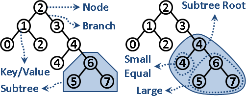
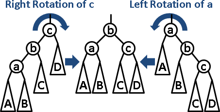
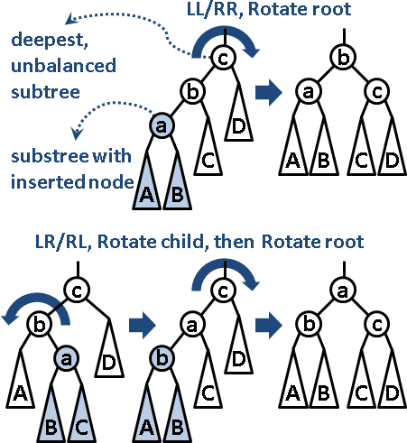

排序資料結構 :
Search Tree 系列
Binary Search Tree
請先參考「 Binary Tree 」。
二元搜尋樹。置放大量數字並且進行排序的資料結構。原理是 Divide and Conquer ，樹根居中，左子樹較小或相等，右子樹較大，然後遞迴分割下去。
插入、刪除、搜尋的時間複雜度等同於二元搜尋樹的高度。資料可以動態增加和減少，二元搜尋樹的高度亦會變動，因此時間複雜度最差為 O(N) ，最佳為 O(logN) 。所有節點連成一線的時候是最差的，所有節點形成 perfect binary tree 是最佳的。
空間複雜度等同於節點數目，空間複雜度是 O(N) 。
尋找極小值、極大值，從樹根開始往左小孩走到底、往右小孩走到底就可以了。時間複雜度等同於二元搜尋樹的高度。
尋找次大節點，就先往右小孩走一步、再往左小孩走到底就可以了；如果一開始沒有右小孩，就往左上父親走到底，再往右上父親走一步就可以了。尋找次小節點，方法類似。時間複雜度等同於二元搜尋樹的高度。
樹葉可以額外建立線索（ Thread ），左小孩連往次小節點，右小孩連往次大節點，如此就能迅速地依照大小順序走訪元素，實作僅用迴圈即可、免用遞迴。建立線索不影響時間複雜度與空間複雜度。
最佳二元搜尋樹（ Optimum Binary Search Tree ）
如果二元搜尋樹的資料不會變動，則可以依照每個節點被搜尋到的次數（頻率），使用 Dynamic Programming 求得結構最佳的二元搜尋樹，藉此減少搜尋時間。建立時間為 O(N²) 。
UVa 10304
擴充資訊（ Augmented Tree ）
二元搜尋樹的每個節點，可以擴充資訊，例如子樹的高度、節點總數、數字總和、數字最大值、數字最小值、 …… 。
排名（ Ranking ）
二元搜尋樹雖然有排序的功效，但是卻沒有排名的功效。想要排名，就要在每個節點新增一個變數，記錄其子樹的節點個數。不影響時間複雜度與空間複雜度。
找到第 k 名的節點：方向從根往葉，取得左小孩的節點個數，判斷第 k 名位於左子樹還是右子樹。時間複雜度等同於二元搜尋樹的高度。
找到節點是第幾名：方向從葉往根，累計左子樹的節點個數，判斷當前節點是左小孩或右小孩以決定是否累計。時間複雜度等同於二元搜尋樹的高度。
UVa 10909
二進位數字表示法
二進位數字一一對應到二元搜尋樹的節點。
如此就能以陣列實作二元搜尋樹。優點是程式碼簡潔，效率高，缺點是浪費記憶體空間、樹的高度受限制。
UVa 712
AVL Tree
http://www.qmatica.com/DataStructures/Trees/AVL/AVLTree.html
平衡二元搜尋樹。樹上每個節點（每棵子樹），其左右兩子樹的高度差最多為一。此舉造成整棵樹的高度為 O(logN) ，讓各項操作穩定運行，不會產生忽快忽慢的極端現象。
每當插入節點，高度差超過一，就馬上運用右旋轉或左旋轉調整高度；旋轉一至兩次，就使整棵樹平衡。旋轉不影響排序。
找到最深、高度差超過一的節點（子樹），依據插入節點的路線，可分為四類情況。左左 / 右右：旋轉子樹樹根，立即平衡。左右 / 右左：先旋轉子樹樹根的左 / 右小孩，成為左左 / 右右，後續同前。
刪除節點則是反過來做。
插入、刪除、搜尋的時間複雜度為 O(logN) 。旋轉、平衡的時間複雜度是 O(1) ，至於空間複雜度仍是 O(N) 。
UVa 11688
Red-Black Tree
紅黑樹的功效等同平衡二元搜尋樹，但是效率更勝一籌。
http://www.cs.princeton.edu/~rs/talks/LLRB/RedBlack.pdf
可以直接使用 STL 的 set 、 map ，但是沒有排名功能。
Splay Tree
splay 是按照規則，把一個節點不斷雙旋至根。插入、刪除之後立即 splay ，儘管樹沒有完全平衡，插入、刪除的均攤時間複雜度是 O(logN) 。
splay 改為單旋，均攤時間複雜度並非 O(logN) ，卻是個不錯的偷懶方式。
運用 splay 拆接子樹，時間複雜度是 O(logN) ，是主要特色。
排序資料結構 :
Multi-way Search Tree 系列
B-Tree
Binary Tree 再進化！一個節點改為儲存大量數字和分枝，以符合傳輸通道大小、減少傳輸次數。適用「每次讀取需要很多準備時間、一次可以讀取一連串資料」的設備，例如硬碟、網路資料庫。
一筆異地資料，存取時間約是計算時間的一千倍！此時我們關心存取時間（存取次數），不太關心計算時間（時間複雜度）。儘管 B-Tree 的搜尋、插入、刪除遠比 Binary Tree 冗長，但是 B-Tree 存取節點的次數較少！是 External Memory Algorithm 的經典範例。
網路已有詳細的教學和動畫，請讀者自行搜尋。
一、一個節點，可儲存m個分枝、m-1個數字。 二、一個節點，數字由小到大，循序儲存。 三、所有樹葉，位於同一層。 四、小孩數量等於數字數量加一。（排除樹葉） 五、小孩數量上下限是[ceil(m/2) , m]。（排除樹葉） 六、樹根不考慮小孩數量上下限。
插入、刪除過程繁複，動用許多節點。後來又發明了 B⁺-Tree 與 B*-Tree ，盡可能直接編輯鄰近節點，避免新增、刪除、搬移節點。
(a,b)-Tree
最少 a 個小孩，最多 b 個小孩。詳細內容請自行搜尋。
排序資料結構 :
Skip Lists
Skip Lists
http://en.wikipedia.org/wiki/Skip_list
置放大量數字並進行排序的資料結構。不用樹狀結構，而改用高度不同的 List 來連接資料。資料結構在概念上可以表示成 Left Child-Right Sibling Binary Tree 的模式。是 Cache-oblivious Algorithm 的經典範例。
時間複雜度與空間複雜度與 Binary Search Tree 皆相同，但是實際運作效率比 Binary Search Tree 還要好。
極值資料結構 :
Heap 系列
Priority Queue
置放大量數字，可以隨時添加數字、隨時取出極值（最小值、最大值，只能選一種）的資料結構，泛稱 Priority Queue 。
泛稱是用來凸顯資料結構的功能。有了這樣的泛稱，當遇到的問題隱含著 queue 與 sort 的概念，就能直覺聯想到 Priority Queue 資料結構，而不會被 Heap 、 Search Tree 這種不直覺的名稱困住了思考。
極值是排序的特例
Heap Search Tree ------------------------- push insert pop extremum + delete peek extremum merge merge
Heap 的每一項操作，都能用 Search Tree 兜出來，時間複雜度完全一樣，唯一的例外是： Heap 預先偷看極值，僅需 O(1) 時間； Search Tree 則需 O(logN) 時間來搜尋極值。
如果在 push 和 pop 之時，隨時記錄極值， Search Tree 還是能快速偷看極值。
Binary Heap
二元樹，樹根的數字，總是小於等於左右小孩的數字。
插入、刪除、求極值的時間複雜度為 O(logN) 。
可以直接使用 STL 的 priority_queue 。
Binomial Heap
遞迴結合多個高度不同的 Binomial Tree ，以抽象化的角度來看像是一個二進位系統。兩個 Binomial Heap 在結合的時候，原理就像是在做二進位加法一樣，因而得此名。
Fibonacci Heap
規則極其詭異，重點在於它有一個特殊功能叫做 decrease key ，可以搜尋數字，並且還可以減少該數字，時間複雜度均攤之後僅有 O(1) 。另外，插入的時間複雜度均攤之後僅有 O(1) 。
僅有理論上的價值，沒有實務上的價值。
Quake Heap
跟 Fibonacci Heap 功效相同，據說簡單很多。因為課本沒教而乏人問津。
https://cs.uwaterloo.ca/~tmchan/heap.ps
Treap
Binary Search Tree 與 Binary Heap 進行合體術。
令數字擁有額外的次序，同時具有「排次序」與「求極值」的功能。樹根的次序介於左右子樹，樹根的數字小於等於左右子樹。
具備排名功效的 Binary Search Tree ，可以用來代替 Treap 。
極值資料結構 :
van Emde Boas Tree
van Emde Boas Tree （ vEB Tree ）
置放大量正整數（與零）的資料結構，並且可以作為 Double Ended Priority Queue ，同時求得最小值與最大值。
利用 Divide and Conquer ，將 0 到 K-1 的整數分為 sqrt(K) 個區塊，每個區塊的範圍大小為 sqrt(K) ，接著各區塊各自遞迴下去。
以另一個角度來看，就是把一個整數從中間切開，成為高位數字部份和低位數字部份，把高位數字抽取出來，作為索引值，找出對應的陣列格子，並遞迴下去以儲存低位數字。跟「 Trie 」有點像。
每次搜尋、插入、刪除為 O(loglogK) ，總時間複雜度為 O(NloglogK) ，其中 N 為正整數個數， K 為這些正整數的最大值。
速度是快了那麼一點，然而缺點是記憶體用很兇，空間複雜度為 O(K) 。【待補分析】
其實我們也可以使用 Counting Sort 來記錄正整數，速度還比 vEB Tree 快，只不過 Counting Sort 不能動態排序罷了。
若要作為 Double Ended Priority Queue ，則在每個節點加上兩個變數，記錄該子樹目前擁有的數字的大小範圍。